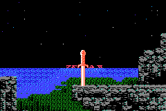

Classic NES Series - Zelda II - The Adventure of Link (USA, Europe)
EEPROM 64K Save Format Spec gbakit Built-In 💾 MultiBoot
Cartridge Identity
- Game Code
FLBE(FamilyFLB)- Header Title
NES ZELDA 2- Maker / Revision
01/ rev0- ROM Size
- 1.0 MiB (1,048,576 B)
- Save Media
EEPROM 64K- SHA-256
732560be6c6957b809c9cc821d0f03c3842c61af220c0a61dc77ffb0f695e862
Screenshots

Link Cable & Multiplayer Communications
This title contains detected communication capabilities: 💾 MultiBoot.
Detailed protocol specifications, SIO registers, Joybus commands, and MultiBoot sequences are documented in the Link & Multiplayer Reference.
- Single-Cart MultiBoot
- Single-Cartridge MultiBoot (Download Play) client/server handler · Thumb SWI 0x25 (
0xDF25):0x0a8750,0x0afc28,0x0e9502
Battery Save Format Specification
Open Full Save Format SpecDownload save-format.json
- Specification Coverage
- 4 mapped fields · 0 verified checksum(s) · Confidence: HIGH
- gbakit Built-In Support
- Built-in (FLBE)
gbakit save verify FLBE save.sav
gbakit save decode FLBE save.sav
gbakit save fix FLBE damaged.sav -o repaired.savObserved Battery Save Layout
- Fill Byte & Active Size
0x00fill · 520–520 / 8,192 B active (entropy 0.16 bits/B)- Active Offset Ranges
0x0–0x1FF,0xFF8–0xFFF(2 total)- ASCII Magic / Headers
DLEZ- Observed Variable Regions
- 0 bytes across 0 spans: None
- Candidate Checksum/Counter Spans
- None
Asset Map (formatkit.asset-map.v1)
Download FLBE-r0-732560be6c6957b8.asset-map.json.gz (4,253 B (4.2 KiB)) Verified PASS · 0.61% coverage
| Metric | Bytes / Value | Entries |
|---|---|---|
| Identified | 6,400 B (6.2 KiB) (0.61%) | 30 |
| Mapped | 0 B (0.00%) | 0 |
| Opaque | 0 B (0.00%) | 0 |
| Unknown | 1,042,176 B (1017.8 KiB) (99.39%) | 30 |
| Total ROM Size | 1,048,576 B (1.00 MiB) | 60 |
| Coverage % | 0.61% | — |
| Entries w/ Code Refs | 29 / 60 (48.33%) | — |
Top Identified Formats: gfx.gba-palette (29 · 6,208 B (6.1 KiB)) · gba.rom-header (1 · 192 B)
Largest unknown Extents (Headerless / Custom Asset Candidates)
| Offset | Size | Shannon Entropy | Code Refs |
|---|---|---|---|
0x00080C10 | 521,200 B (509.0 KiB) | 7.498 bits/B | 0 |
0x00046230 | 112,488 B (109.9 KiB) | 2.577 bits/B | 0 |
0x00004A50 | 104,528 B (102.1 KiB) | 7.087 bits/B | 0 |
0x00031D04 | 82,732 B (80.8 KiB) | 2.930 bits/B | 0 |
0x000701D0 | 67,648 B (66.1 KiB) | 2.890 bits/B | 0 |
gzip -dk FLBE-r0-732560be6c6957b8.asset-map.json.gz && gbakit map verify rom.gba FLBE-r0-732560be6c6957b8.asset-map.json
gbakit assets export rom.gba --asset-map FLBE-r0-732560be6c6957b8.asset-map.json -o out/Text, Fonts & Scene Data
- Primary Text Encoding
- Compressed / custom-encoded text
- Font & VWF Indicators
- No VWF Table No 1bpp Font · BIOS SWIs: BitUnPack
0x10:14· LZ770x11/12:6· Huffman0x13:5· RLE0x14/15:8 - Scene & Packaging
0ROM pointer tables (≥32 entries,0≥200) ·0relativeu32TOCs ·797OAM metasprite hits